About
自己紹介
食品メーカーでの法人営業から始まり、転職エージェントでRA/CAを経験し、採用人事としてキャリアを歩んでいます。
採用やキャリアに関する支援を行いながら、過去一緒に働いたメンバーたちと『HR Share』というコミュニティを立ち上げ、「採用」や「人事」についてディスカッションしています。2022年8月にキャリアコンサルタント試験に合格し、キャリア支援にもこれまで以上に力を入れています。
一緒に暮らしている やきとり3兄弟
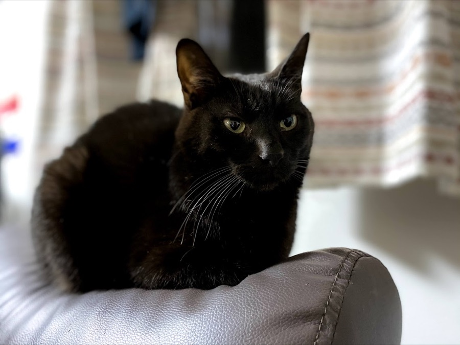
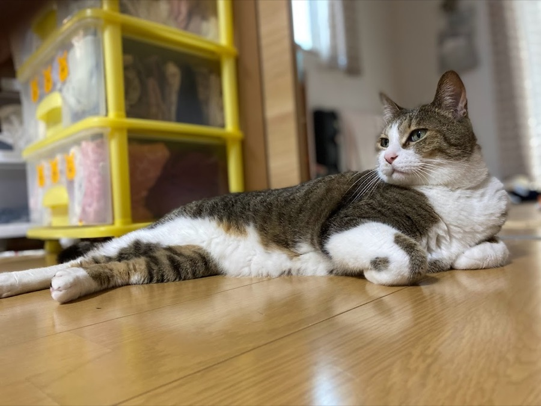
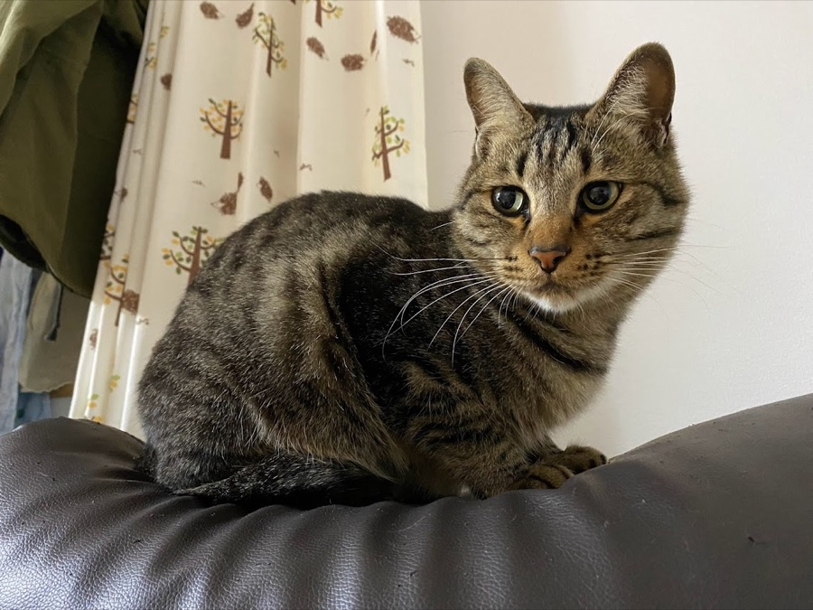
Career
簡単なキャリア
株式会社IVRyにて、コーポレート領域の中途採用、採用広報、採用Opsを担当しています。
仕事では、良い組織をつくること、社外にその価値を正しく伝えること、そして候補者の方に納得感のある選考体験を提供することを重視しています。入社後も、仲間と一緒に組織をより良くしていくところまでを採用活動の一部として捉えています。
今後は、関わり方にこだわらず（本業・副業・ボランティア含め）活動領域を広げていきます。
- 1社目
株式会社万城食品法人営業（ルートセールス営業 ⇒ 本部商談営業）
- 2社目
株式会社キャリアデザインセンターRA ⇒ CA ⇒ CAをやりながらRAも少し
- 3社目
パーソルキャリア株式会社CA ⇒ ハイキャリアCA ⇒ CA育成チーム
- 4社目
THECOO株式会社採用（エンジニアとデザイナーを中心に新卒も少し）と採用広報
- 5社目
株式会社タイミーエンジニア採用
- 6社目
コミューン株式会社エンジニア採用 ⇒ DevHR
- 7社目・現職
株式会社IVRyエンジニア採用・採用広報/技術広報・採用Ops ⇒ コーポレート採用・採用広報・採用Ops
副業実績
- 株式会社HRdevコンテンツマーケティング
- 株式会社C採用支援
- 株式会社LiftBaseカスタマーサクセス支援
- Loop Now Technologies Inc.人事
- 株式会社FUN UP人事
- 株式会社おてつたび人事
- 株式会社GOAL-Bキャリアコーチ
Principles
行動指針
- Journey
- 家族を守り、熱狂した人生を歩む
- Vision
- 人生に熱狂している人が溢れている世界の実現
- Mission
- 採用から定着までを繋ぎ、組織の成長と個人の熱狂を両立させる
- Value
- 家族が最優先・主体的に学ぶ・背中を押す・対立を恐れない・楽しさを大切に・自分が決める
- Purpose
- 働く人の可能性を最大化し、地方から日本の成長を加速させる
Words
好きな言葉
努力した者が全て報われるとは限らない。しかし、成功した者は皆すべからく努力している。
人は必要な時に必要な人と会う。
人は会社がなくても生きていけるが、会社は人がいなければ存在できない。
Future
目指す未来
- まずは猫の殺処分を0にする。次に犬。最終的に殺処分という行為を無くす。
- 人材を起点に地方を変え、日本の成長を地方から加速させる。
- 「人事×コミュニティ」から「人事×コミュニティ×コーチング」へ。そして「人事×コミュニティ×コーチング×テクノロジー」に進化させ、人事の在り方をアップデートさせる。
Works
自己開発
AIを活用して、サービスづくりに挑戦しています。人事の仕事の中で感じた不便や、家族・趣味の「あったらいいな」を、企画から設計・開発・公開まで自分の手で形にしています。
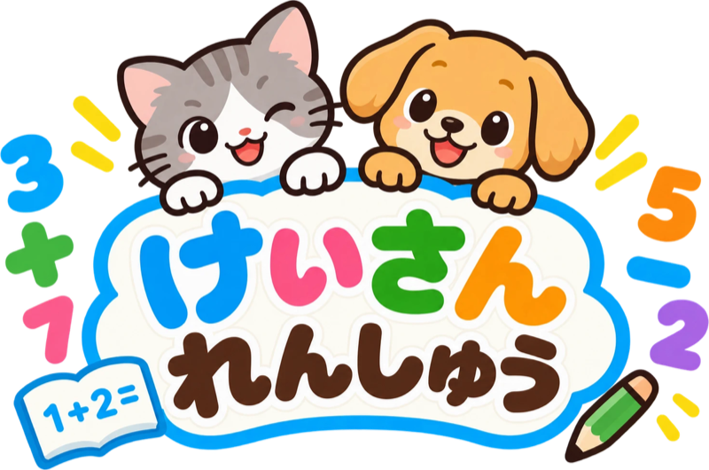
けいさん れんしゅう
小学1年生が、10までのたし算・ひき算を毎日楽しく続けるために作られたサービスです。ねこの みー と いぬの ころ が、いっしょに応援します。
ひらく →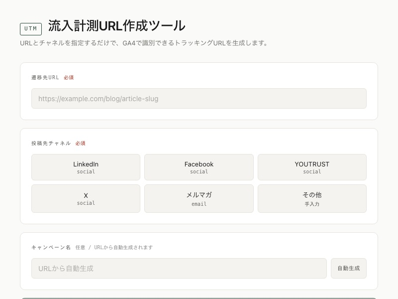
流入計測URL作成ツール ( UTM Builder )
LinkedIn・X・Facebook・YOUTRUST・メルマガなどへの投稿用に、GA4で識別できるUTMパラメータ付きURLを生成するシンプルなWebツールです。
ひらく →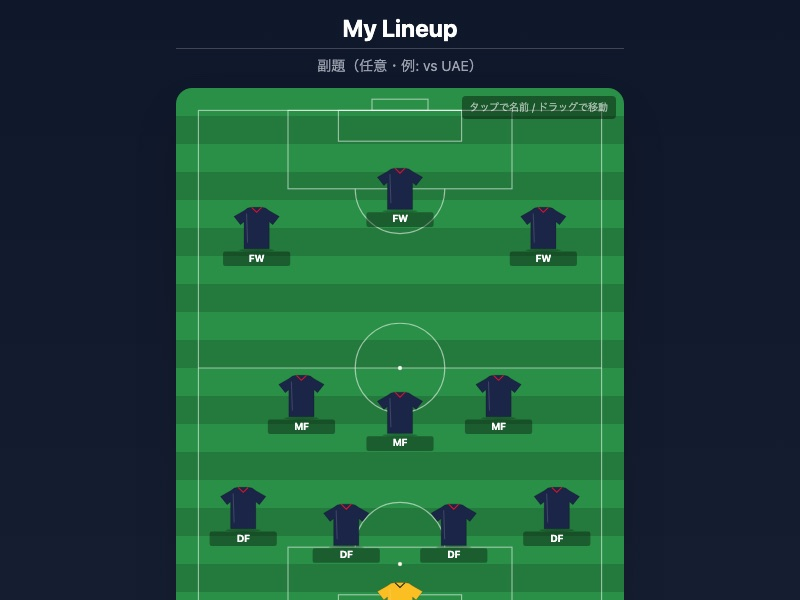
Formation Maker
サッカーのスターティングメンバー表とフォーメーションを直感的に作れるWebアプリです。
ひらく →Blog
ブログ
Kazuki Nakajima ｜ note
「キャリア」「採用」「働きがい」について発信しています。組織づくりや採用の考え方をまとめた長めの記事が中心です。
読む → しずかなインターネットkazuki_yakitori
日記やエッセイを、肩の力を抜いて書いています。日々のこと、考えたこと、振り返り。
読む → しずかなインターネット ・ 連載いただきます、日本！
日本各地の「おいしい」を味わって綴るシリーズ。地方の食と、その土地への想いを。
読む →執筆記事
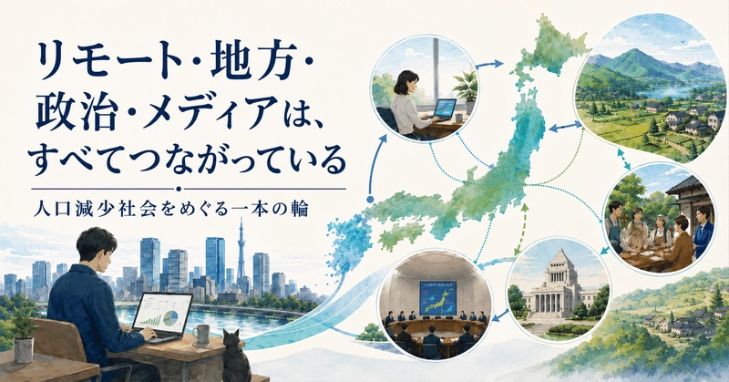
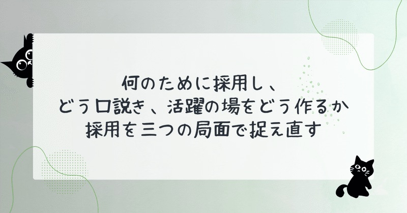
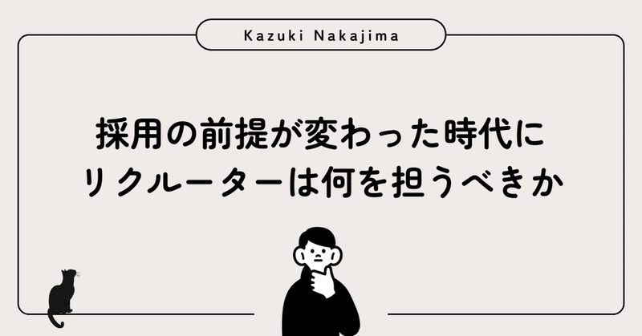
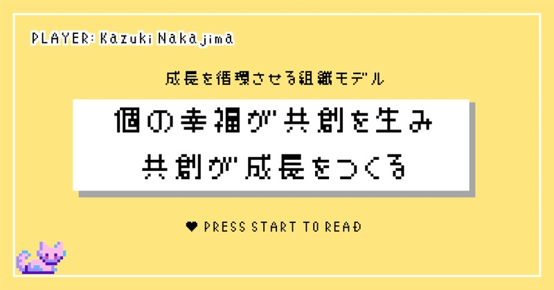
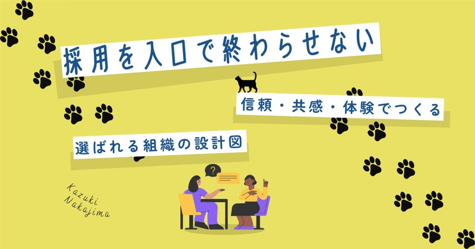
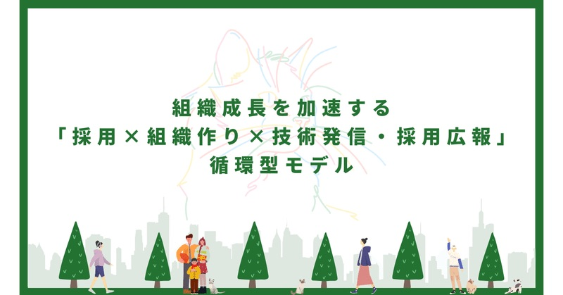
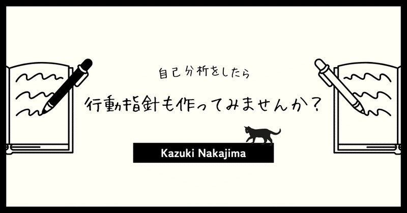
Community
HR Share
「採用」と「人事」を語り合うコミュニティ
パーソル時代の同僚と共に立ち上げました。主にSlackで情報共有をしています。興味のある方は、お気軽にご連絡ください。